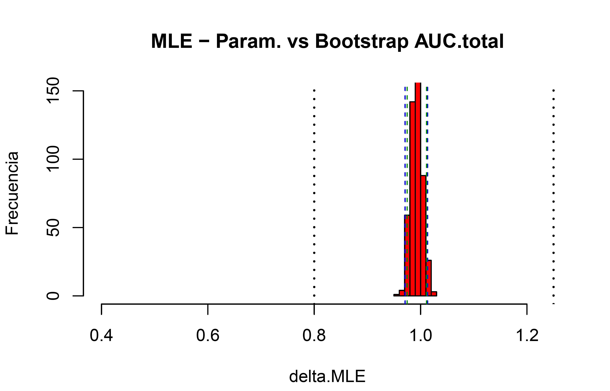
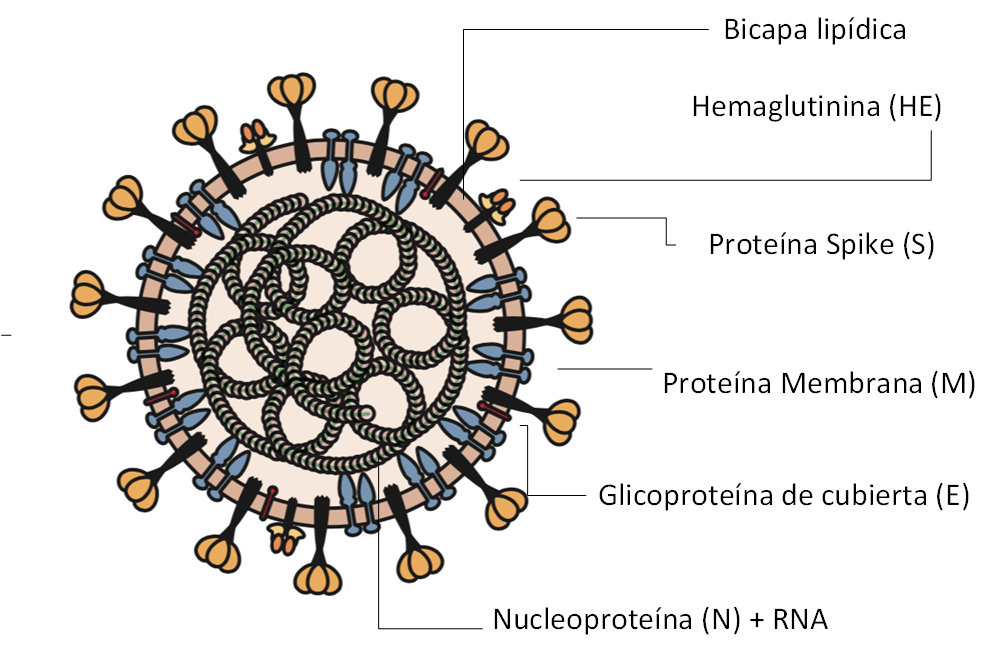

En este proyecto se muestran algunas consideraciones de estudios de bioequivalencia clínicos aplicados a un ejemplo propuesto en curso de BE-BD.
En este módulo se discuten análisis sobre la terapia de medicamentos
Soy Químico Farmacéutico de la UNAL con interés especial en M&S aplicado a la terapéutica.